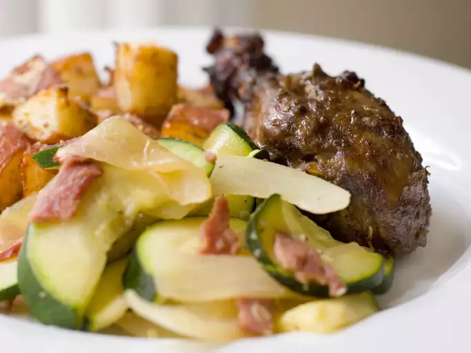

Jerk Chicken

Jay's Jerk Chicken
This is one of my nephew's favorite grilled recipes. Jerk means Jamaican barbecue. This well rounded flavor of sweet, hot, herbal and spicy chicken can be served with rice, beans or pasta. Or just make a chicken sandwich out of it! I also add garlic and a kiwi to the marinade.
Ingredients
- 6 green onions, chopped
- 1 onion, chopped
- 1 jalapeno pepper, seeded and minced
- ¾ cup soy sauce
- ½ cup distilled white vinegar
- ¼ cup vegetable oil
- 2 tablespoons brown sugar
- 1 tablespoon chopped fresh thyme
- ½ teaspoon ground nutmeg
- ½ teaspoon ground allspice
- 1 ½ pounds skinless, boneless chicken breast halves
Steps
- In a food processor or blender, combine the green onions, onion, jalapeno pepper, soy sauce, vinegar, vegetable oil, brown sugar, thyme, cloves, nutmeg and allspice. Mix for about 15 seconds.
- Place the chicken in a medium bowl, and coat with the marinade. Refrigerate for 4 to 6 hours, or overnight.
- Preheat grill for high heat.
- Lightly oil grill grate. Cook chicken on the prepared grill 6 to 8 minutes, until juices run clear.